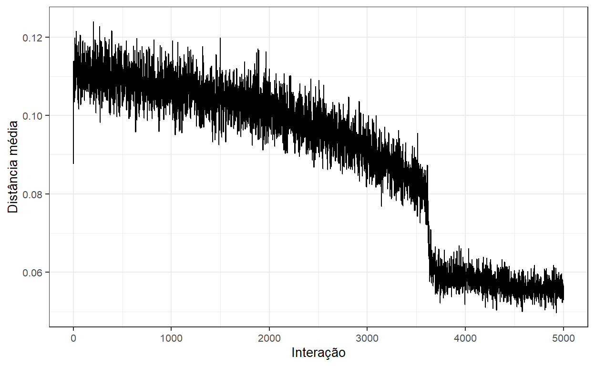
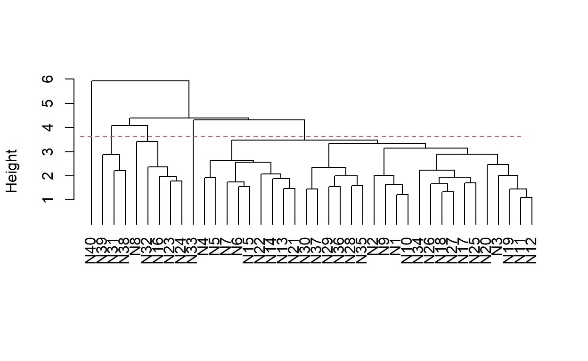
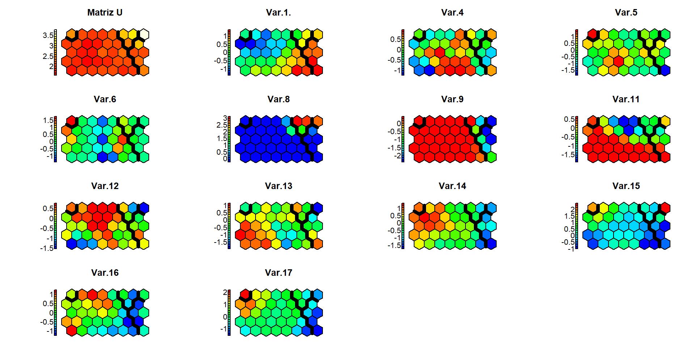

Utilizando inteligência computacional para uma análise de diversidade genética com gráficos interativos.
Esse foi um pipeline que desenvolvi para um artigo utilizando mapas autorganizaveis de kohonen (SOM) para a análise de diversidedade genética de variedades de cana-de-açúcar.
Os dados das siglas das variedades e dos cacteres análisados foram codificados de maneira a manter a originalidade do artigo que esta começando a ser escrito na data de publição deste post.
A definição do número de neurônios (nós da rede) e geralmente feita no chute. Porém existe um método heurístico empregado no metlab (SOM - Supervisionado) que, foi adaptado para o R e eu achei o resultado satisfatório. Desta maneira a grade foi formada por 8 linhas e 5 colunas, totalizando 80 neurônios. Foi utilizada a distancia euclidiana e cinco mil interações para o treinamento da rede. Mais informações abaixo:
$xdim
[1] 8
$ydim
[1] 5
$topo
[1] "hexagonal"
$neighbourhood.fct
[1] gaussian
Levels: bubble gaussian
$toroidal
[1] FALSESOM of size 8x5 with a hexagonal topology and a gaussian neighbourhood function.
The number of data layers is 1.
Distance measure(s) used: euclidean.
Training data included: 63 objects.
Mean distance to the closest unit in the map: 1.534.A primeira saída é o treinamento da rede. Apesar de não ser um gráfico bonito, o que vale aqui é observar uma “estabilização” conforme o número de interações aumenta.

Ao menos em alguns artigos de melhoramento que li não vi ninguém mencionando métricas de qualidade de ajustumento do mapa. Todavia, o pacote aweSOM fornece alguns parâmetros:
## Quality measures:
* Quantization error : 2.569423
* (% explained variance) : 79.92
* Topographic error : 0
* Kaski-Lagus error : 3.263092
## Number of obs. per map cell:
1 2 3 4 5 6 7 8 9 10 11 12 13 14 15 16 17 18 19 20 21 22 23
4 2 3 1 1 3 2 2 2 0 0 1 1 2 1 2 1 1 4 1 0 2 0
24 25 26 27 28 29 30 31 32 33 34 35 36 37 38 39 40
2 3 3 0 0 2 0 0 2 1 2 3 2 2 3 1 1 Apesar do mapa já nos fornecer um agrupamento, sendo estes os clones inseridos em cada neurônio (tambem chamado de céluas ou subclusters). Estes neurônios (N1 a N40) podem ser agrupados (em superclusters) ,para isso, eu utilizei um metodo hieráraquico (UPGMA) para agrupar e o ponto de corte do dendograma foi o utilizando critério de mojena (k = 1.25). Acredito que esta abordagem é mais palpável que atribuir um ponto de corte aleátório, considerando que neste trabalho não se tem noção de um número ideal de clusters pré definido. Além do dendrogama temos métricas que auxiliam na interpretação da qualidade do dendrograma formado.

_________________________________________________________________________
Estimativa de correlacao cofenetica:
[1] 0.7627311
Significancia da correlacao cofenetica pelo teste Mantel
pvalor: 0.001
Hipotese alternativa: A correlacao e maior que 0
Ponto de corte pelo metodo Mojena
k=1.25 k=2
3.635611 4.404256
_________________________________________________________________________ De acordo com o ponto de corte estimado acima, cinco grupos são sugeridos e agora eu posso aplicar estes agrupamentos em todas as outras saídas do mapa de kohonen.
Começando pelo fim aqui eu posso ver (com gráficos interativos) quais e quantos clones foram classificados nos neuronios (pré-clusters) e também os agrupamentos do dendrograma que são representados pelas cores de preenchimento dos hexágonos.
É bem comum a representação do número de indivíduos em cada neurônio como neste grafico abaixo:
Aqui nós vemos como cada neuronio da grade se relacionou com as treze variaveis além de uma matiz de distancia (Matriz-U) em relção aos seus vizinhos (nesse caso a vizinhança foi esfificada como hexagonal no início do treinamento da rede). Agora os grupos determinados pelo metodo hierarquico são delimitados pelas linhas escuras no mapa.

Outras maneiras de observar todas as variaveis de uma vez só de maneira interativa podem ser observadas nas figuras abaixo.
Gráfico Circular
Gráfico de Barras
Gráfico de Radar
Uma das grandes vantagens que eu vejo como iniciante ao utilizar a tecnica é a possibilidade de visualizar a distancia “física” entre os agrupamentos, algo que não é possível em outras técnicas convencionais de analise de agrupamento. Dessa maneira, além dos grupos, posso recomendar cruzamentos utilizando os mais distantes visualmente no mapa de maneira a explorar a variabilidade dos clones.